SIARD Suite 2.2 - Menus de SiardGui
Les menus suivants sont disponibles dans SiardGui:
- Fichier / Télécharger ...
- Fichier / Récemment téléchargés
- Fichier / Charger ...
- Fichier / Récemment chargés
- Fichier / Ouvrir ...
- Fichier / Récemment ouverts
- Fichier / Enregistrer
- Fichier / Fermer
- Fichier / Afficher les métadonnées ...
- Fichier / Enrichir les métadonnées ...
- Fichier / Quitter
- Editer / Tout copier
- Editer / Copier
- Editer / Exporter un tableau ...
- Editer / Rechercher dans les métadonnées ...
- Editer / Prochaine référence dans les métadonnées
- Editer / Rechercher dans les données des tableaux ...
- Editer / Prochaine référence dans le tableau
- Outils / Installer ...
- Outils / Désinstaller
- Outils / Langue
- Outils / Contrôler l'intégrité ...
- Outils / Options ...
- ? / Aide
- ? / Info
Les menus sont désactivés s'ils ne peuvent pas être utilisés dans la situation actuelle. C'est pourquoi, au début, seuls Télécharger et Ouvrir sont disponibles.
Fichier / Télécharger ...
En sélectionnant ce menu, un dialogue est affiché dans lequels les données de connexion pour la base de données peuvent être saisies.
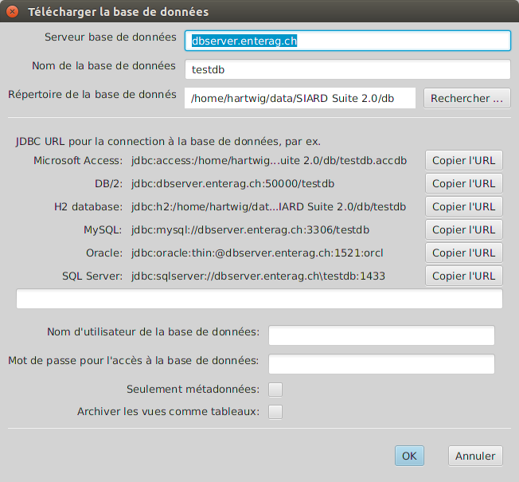Le long champ de saisie texte au milieu doit être rempli avec un URL JDBC et l'utilisateur de l'archive ainsi que son mot de passe doivent être saisis. Si seules des métadonnées doivent être téléchargées (par ex. pour avoir une idée du volume de la base de données), la case "seulement métadonnées" doit être cochée. Si des vues doivent être téléchargées comme tableaux (par ex. parce que seules les vues, mais pas leurs tableaux de base sont visibles par l'utilisateur), la case "Archiver les vues comme tableaux" doit être cochée.
En haut, le nom du serveur, le répertoire de la base de données et le nom de la base de données ne servent qu'à créer l'URL correct pour le système de gestion de base de données (DBMS). Si ces données sont modifiées, les URL exemples affichés pour chaque DBMS supporté par SIARD sont modifiés. En activant le bouton Copier l'URL à côté d'un URL exemple, ce dernier est copié dans le champ de saisie pour l'URL JDBC.
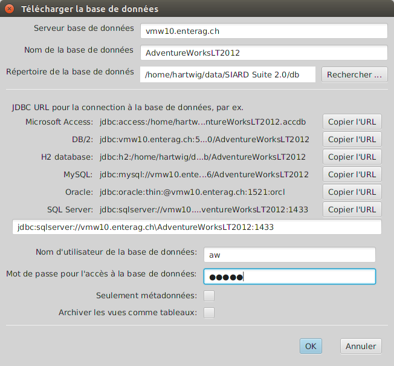N'importe quelle chaine de caractères peut être saisie comme URL JDBC. Ainsi, des configurations de sécurité spécifiques peuvent être prises en compte, comme une annonce Windows ou Kerberos. Les définitions spécifiques des URL JDBC doivent être consultées dans la documentation du fournisseur du DBMS si les standards présentés ici sont insuffisants (voir Database Management Systeme).
C'est généralement une mauvaise idée d'utiliser l'administrateur de bases de données (DBA, root, dbo, SYSTEM, sa, dbadmin, ...) pour le téléchargement d'une archive SIARD. SIARD charge toutes les données en tant que base de données dans l'archive à laquelle l'utilisateur de la base de données peut accéder en lecture. L'administrateur de base de données global peut accéder en lecture sur toutes les bases de données du DBMS et à beaucoup de tableaux systèmes qui ne doivent pas être archivés. C'est pourquoi il est important de trouver ou de créer un utilisateur adéquat pour la préparation au téléchargement.
Si la connexion à la base de données ne s'établit pas, le dialogue est affiché aussi longtemps, jusqu'à ce qu'un URL JDBC valable soit saisi ou que Abandonner soit choisi. Si Seulement métadonnées a été coché, une archive SIARD est créée. Elle est effacée en quittant le programme. (On peut toutefois éditer, afficher et exporter les métadonnées téléchargées avant de fermer l'archive.) Dans le cas contraire, il faut choisir ensuite le nom et le répertoire où l'archive SIARD doit être enregistrée.
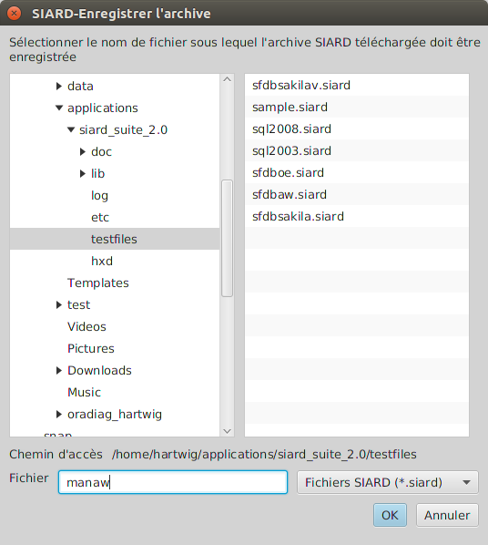Le téléchargement peut alors débuter.
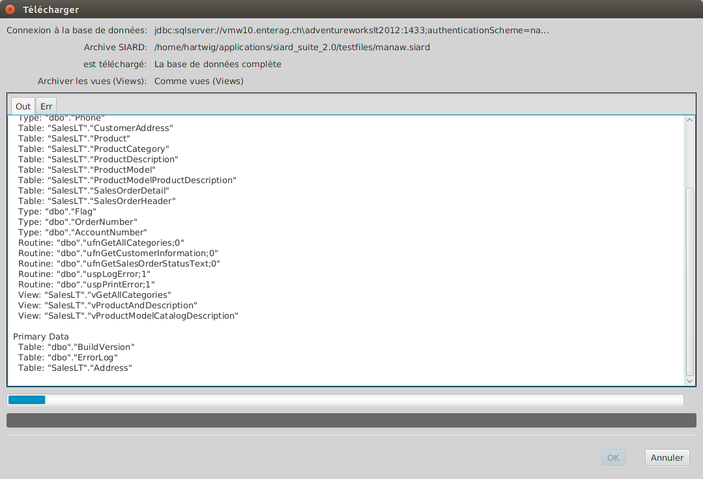Si le téléchargement a été effectué avec succès, le dialogue peut être fermé avec le bouton OK. Les données téléchargées apparaissent alors dans la fenêtre principale. A cet endroit, d'autres métadonnées devraient être saisies, au minimum un nom pour la base de données, le nom du propriétaire des données avant l'archivage et la période de création des données.
Si le téléchargement a été effectué avec succès, l'URL JDBC utilisé est repris dans la liste des données de connexion récemment utilisées qui peut être appelée par le prochain menu.
Fichier / Récemment téléchargés
Les dernières données de connexion utilisées sont affichées au choix dans ce menu. Si une entrée est sélectionnée, le dialogue de connexion est affiché et contient déjà l'URL JDBC et l'utilisateur de la base de données. Seul le mot de passe doit encore être saisi.
Fichier / Charger ...
En choisissant ce menu, le dialogue est affiché dans lequel les données de connexion à la base de données peuvent être saisies.
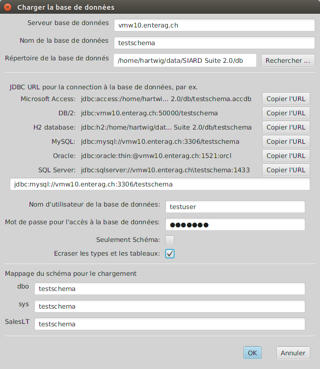L'URL JDBC peut, de la même manière, être construit avec le serveur de la base de données, le nom de la base de données et le répertoire de la base de données et ensuite copié comme dans le dialogue de connexion pour le téléchargement. Comme le contenu des fichiers SIARD est indépendant du DBMS, les données peuvent être chargées dans une instance d'un autre DBMS.
Il est en outre possible de choisir si les types et les tableaux doivent être surinscrits avec le même nom. Ceci est dangereux si l'on se connecte avec l'administrateur de bases de données avec beaucoup de droits, toutefois utile si l'on veut charger plusieurs fois la même base de données.
Si Seulement schéma est coché, seuls les schémas de la base de données (types et tableaux vides) seront créés, sans que les données primaires soient chargées.
Tout au bas du dialogue, une liste de tous les schémas pouvant apparaître dans le fichier SIARD est affichée. Pour le chargement, on peut décider ici dans quels schémas de l'instance de base de données les schémas du fichier SIARD doivent être chargés. Ces schémas doivent être créés avant le chargement. L'utilisateur de la base de données qui est indiqué dans ce dialogue doit détenir le privilège permettant de créer des types et des tableaux dans ces schémas. Le plus simple souvent, pour le chargement, c'est d'utiliser le compte d'un administrateur de bases de données qui détient tous les droits d'écriture.
Si le DBMS cible ne supporte pas d'UDTs ou ARRAYs, les données sont chargées de manière "aplatie". Cela signifie que chaque UDT ou ARRAY est chargé pendant qu'une colonne séparée est créée pour chaque composant.
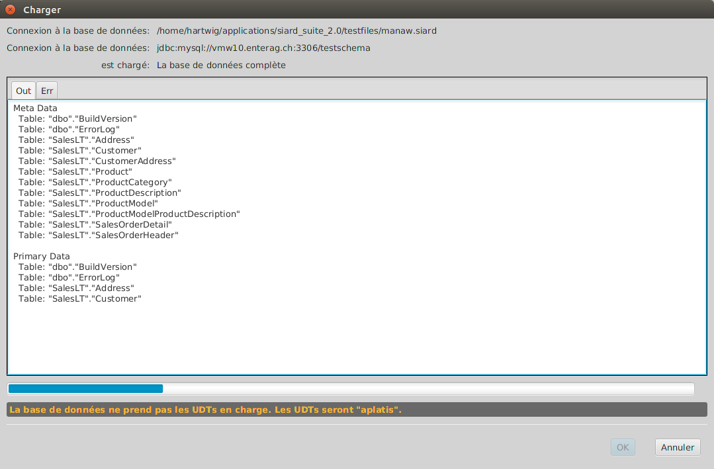Si la création de types et de tableaux ainsi que le chargement des données primaires ont été effectués avec succès, le chargement est considéré comme réussi. Il est possible que quelques types et tableaux aient été renommés afin de satisfaire aux restrictions de longueurs pour les descriptifs du système cible. Dans ces cas, le suffixe supprimé d'un long descriptif est remplacé par un chiffre.
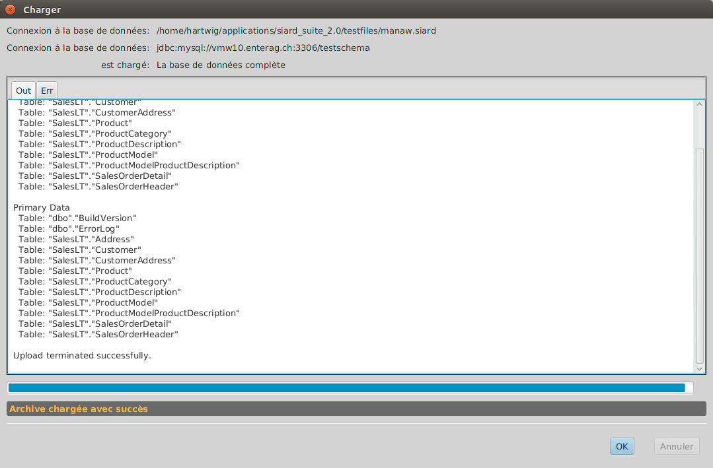L'activation des restrictions (unicité, références) n'est tentée qu'à la fin du chargement. Il est possible que cela échoue, car différents DBMS suivent des règles plus sévères s'écartant du standard SQL:2008 que d'autres. Un tel échec est affiché dans l'onglet Err du dialogue de chargement.
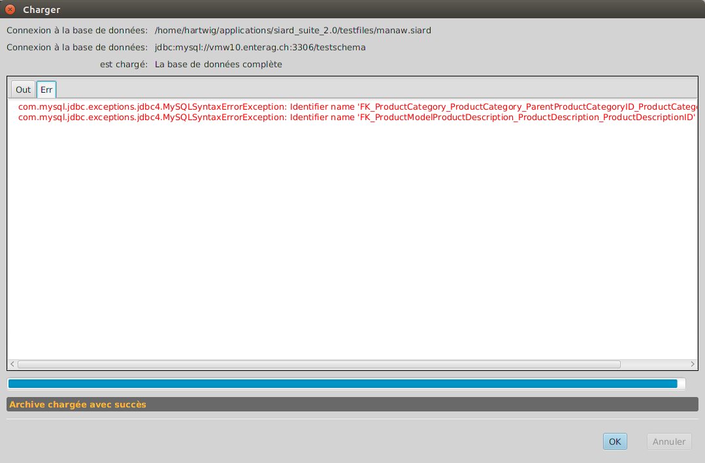Si le chargement a été effectué avec succès, l'URL JDBC utilisé est repris dans la liste des données de connexion récemment utilisées qui peut être appelée par le prochain menu.
Fichier / Récemment chargés
Les connexions URLs JDBC récemment utilisées pour le chargement de bases de données sont à disposition dans ce menu. En en sélectionnant une, le dialogue de connexion est affiché avec l'URL JDBC correspondant et l'utilisateur de la base de données. Il faut encore saisir le mot de passe et l'affectation au schéma.
Fichier / Ouvrir ...
En choisissant ce menu, un dialogue de sélection de fichiers est affiché pour lesquels un fichier SIARD existant peut être sélectionné. Ce dernier est ouvert dans la fenêtre principale. A cet endroit, les métadonnées peuvent être modifiées et complétées. Les données primaires peuvent être consultées.
Si un fichier SIARD a été ouvert ou téléchargé avec succès, son nom sera repris dans la liste des fichiers récemment utilisés qui peut être appelée dans le menu suivant.
Fichier / Récemment ouverts
En sélectionnant un fichier récemment ouvert, ce dernier est ouvert dans la fenêtre principale.
Fichier / Enregistrer
Si les métadonnées d'un fichier SIARD ont été modifiées, elles ne sont enregistrées sur le support de données seulement lorsqu'elles sont explicitement enregistrées.
Les fichiers temporaires SIARD créés au téléchargement avec l'option Seulement métadonnées ne peuvent pas être enregistrés. Leurs métadonnées peuvent toutefois être affichées, modifiées et exportées avant de fermer le fichier.
Fichier / Fermer
Après la fermeture d'une archive SIARD, une autre peut être téléchargée ou ouverte.
Fichier / Afficher les métadonnées ...
En choisissant ce menu, les métadonnées d'une archive SIARD dans la fenêtre principale peuvent être affichées comme document HTML humainement lisible.
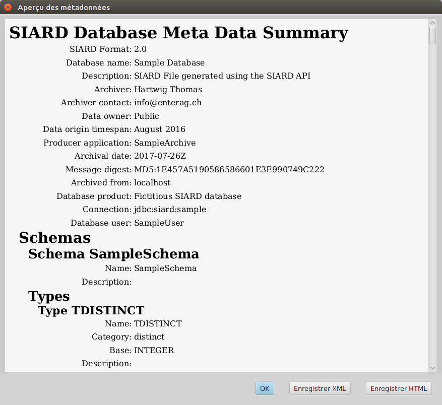Une version HTML des métadonnées qui ont été créées avec le fichier XSL des métadonnées XML actuellement sélectionné est affichée. La condition est d'utiliser une simple transformation etc/metadata.xsl. D'autres transformations XSL plus détaillées en fichiers HTML peuvent être sélectionnées dans Outils / Options.
L'XML des métadonnées originales peut être enregistré comme fichier externe avec le bouton Enregistrer XML. Si le bouton Enregistrer HTML est cliqué, le fichier HTML transformé, créé par la transformation XSL depuis les métadonnées XML d'origine, est enregistré à la place.
Fichier / Enrichir les métadonées ...
Les métadonnées enregistrées en externe peuvent être très utiles si la "même" base de données doit être à nouveau archivée à une date ultérieure. Il est alors inutile de saisir à nouveau manuellement toutes les descriptions des tableaux et des colonnes. A la place, on peut enrichir l'archive SIARD, qui contient ces descriptions, avec des métadonnées enregistrées en externe.
Après la sélection d'un fichier avec des métadonnées XML pour enrichir l'archive SIARD affichée actuellement, toutes les descriptions auxquelles les noms des objets de la base de données (schéma, tableau, colonne, ...) correspondent, sont copiées. Si par conséquent la base de données actuelle diffère légèrement en terme de structure de la base de données documentée dans les métadonnées, la plupart des descriptions sont néanmoins reprises.
Fichier / Quitter
En sélectionnant ce menu, une archive éventuellement ouverte est fermée est le programme est quitté.
Editer / Tout copier
Ce menu copie le tableau affiché à droite sous les métadonnées dans le presse-papier. Il peut s'agir d'une liste de sous-objets ou d'un extrait de données primaires.
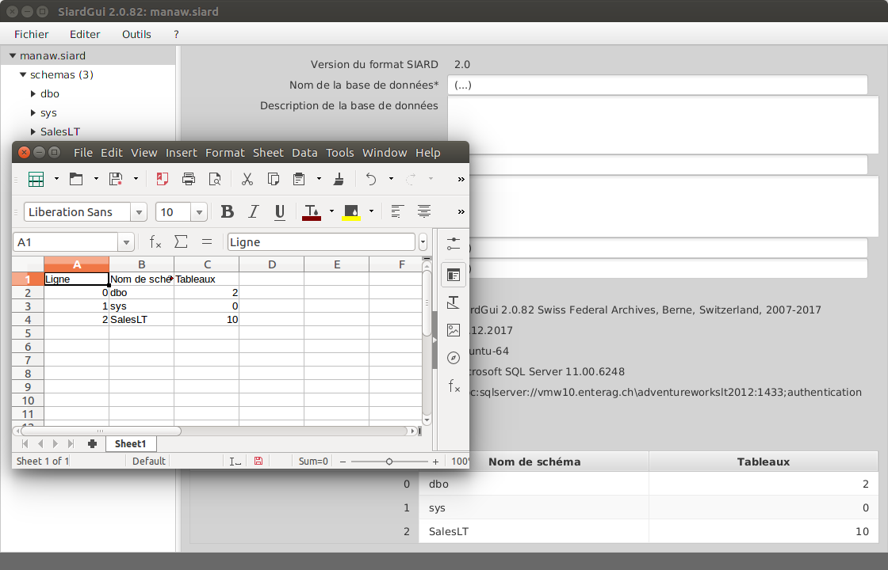Le contenu du presse-papier peut être inséré dans une autre application pouvant afficher du texte ou des données de tableaux. Les données de tableaux sont séparées par des tabulateurs. C'est pourquoi l'insertion dans MS Excel ou LibreOffice crée une bonne copie tabulaire.
Editer / Copier
Ce menu peut être sélectionné si une ligne du tableau est cliquée. Le cas échéant, la ligne particulière du tableau qui contient la cellule choisie est copiée dans le presse-papier.
Editer / Exporter le tableau ...
Quelquefois, il est souhaitable de traiter tout un tableau dans une autre application. Dans ce cas, le tableau entier peut être exporté dans un fichier HTML qui contient essentiellement seulement un tableau.
Le format HTML a été choisi comme format d'exportation, car on peut l'ouvrir comme un fichier CSV dans MS Excel ou LibreOffice. Par ailleurs, il évite certaines faiblesses du format CSV et rend possible des tableaux en tableaux pour des valeurs UDT et pour des liens à des fichiers externes pour des valeurs large objet (CLOB, BLOB, XML, ...).
Si ce menu est sélectionné, le fichier HTML doit être spécifié à l'aide du dialogue de sélection de fichiers. Les valeurs large object sont enregistrées dans un répertoire LOB spécial qui peut être modifié dans Outils / Options ....
Editer / Rechercher dans les métadonnées ...
Si la base de données contient beaucoup de tableaux et de colonnes, il est souvent difficile de retrouver une valeur de métadonnée. A l'aide de la fonction Rechercher dans les métadonnées ..., toutes les métadonnées contenant une chaine de caractères peuvent être trouvées.
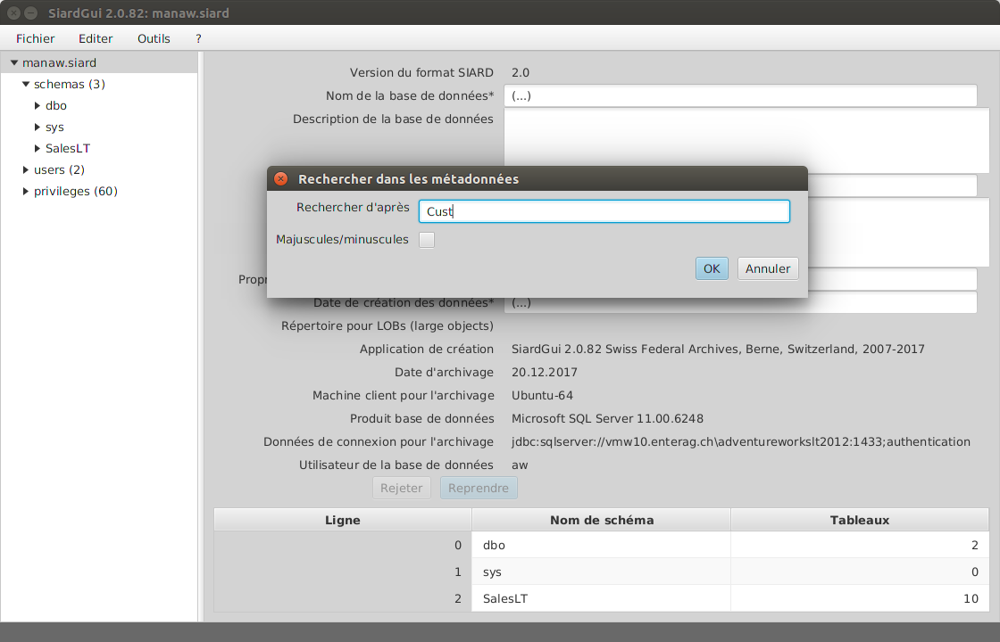
Editer / Prochaine référence dans les métadonnées
Avec Prochaine référence dans les métadonnées ou Majuscule-F3, toutes les références d'une chaine de caractères peuvent être recherchées.
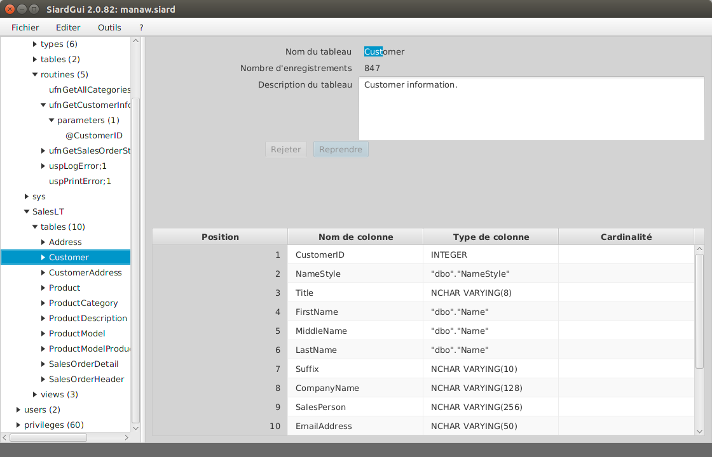
Editer / Rechercher dans les données des tableaux ...
Par analogie, il est quelquefois souhaitable de rechercher les données primaires d'un tableau d'après une chaine de caractères.
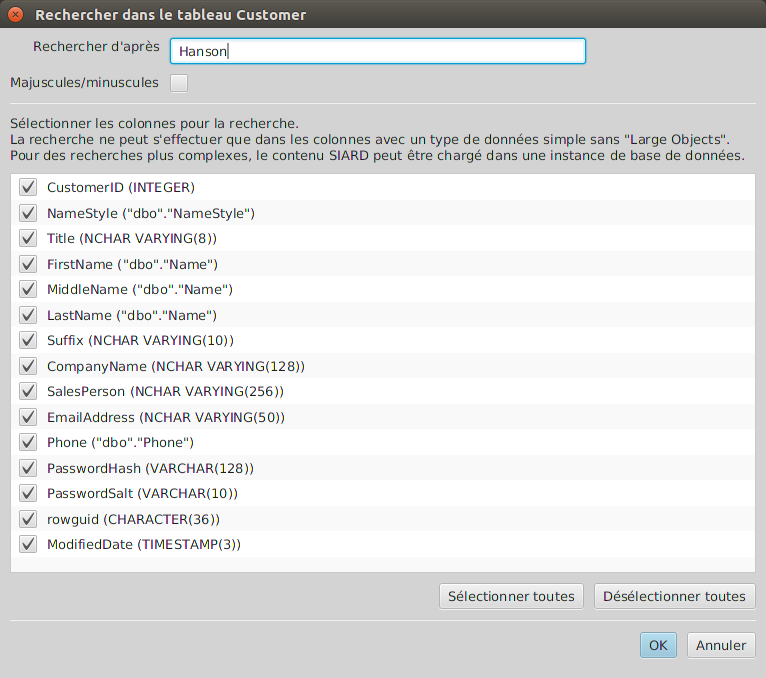Le dialogue de saisie d'une chaine de caractères est un peu plus complexe. La recherche est limitée à des colonnes simples. Une quantité partielle de ces colonnes simples peut être choisie. La recherche est une simple recherche de texte (les chiffres et les données affichés dans le tableau sont traités comme des textes). La recherche est effectuée séquentiellement dans tout le tableau et peut durer un certain temps pour de grands tableaux. Une recherche rapide ou une recherche dans de complexes ou grandes valeurs (CLOB, BLOB, XML, UDT, ARRAY, ...) est possible si l'on charge l'archive SIARD dans une instance DBMS et qu'on utilise SQL pour la recherche.
Editer / Prochaine référence dans le tableau
Avec Prochaine référence dans le tableau ou F3, la référence suivante de la chaine de caractères recherchée est affichée.
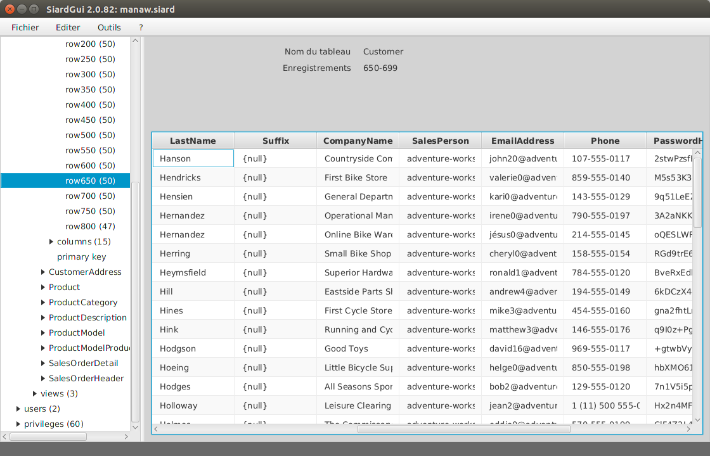
Outils / Installer ...
Comme décrit dans le chapitre Installation, SIARD Suite peut à tout moment être installé si aucune version installée n'existe ou si la version installée porte un plus petit numéro de version que celle actuellement exécutée.
Outils / Désinstaller
Une installation de SIARD Suite peut être éliminée en sélectionnant ce menu. Avant la désinstallation, il est demandé à l'utilisateur si les paramètres personnels de SIARD Suite doivent aussi être éliminés ou conservés pour une installation future de SIARD Suite.
Outils / Langue
On peut sélectionner ici une des langues supportées par l'interface utilisateur.
Outils / Contrôler l'intégrité
Si l'archive SIARD contient un message digest relatif aux données primaires, il peut être recalculé à l'aide de ce menu et comparé avec la valeur enregistrée.
SIARD Suite calcule le message digest immédiatement après le premier téléchargement et l'enregistre dans les métadonnées. Si l'archive SIARD a été décompressées et les données primaires ont été modifiées, le contrôle de l'intégrité échoue.
Il est toutefois simplement possible pour d'autres programmes de modifier les données primaires et d'enregistrer le message digest correspondant dans les métadonnées. Dans ce cas, le contrôle d'intégrité prouve au plus qu'aucune donnée primaire n'a été manuellement modifiée.
Une meilleure garantie d'authenticité de l'archive consiste à enregistrer tous les messages digests générés lors du téléchargement dans une base de données séparée et strictement contrôlée. Ensuite, le message digest enregistré dans les métadonnées devrait être comparé avec celui de la base de données externe. Le contrôle d'intégrité disponible ici ne peut être considéré comme preuve que les données primaires n'ont plus été modifiées après le téléchargement, que si ce message digest n'a pas changé.
Outils / Options ...
Le dialogue Options permet de modifier plusieurs données personnelles de configuration. Si elles sont modifiées dans une instance de SIARD Suite, elles seront enregistrées dans les paramètres personnels en quittant le programme. Dans le cas contraire, elles ne sont valables que durant la session actuelle.
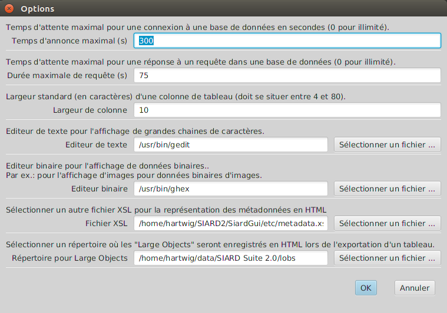
? / Aide
Ce menu permet de consulter le présent manuel.
? / Info
Ce menu affiche l'impressum de SIARD Suite.
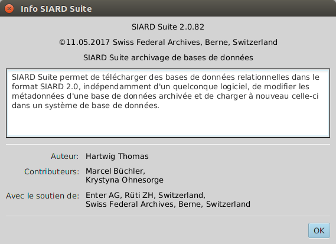